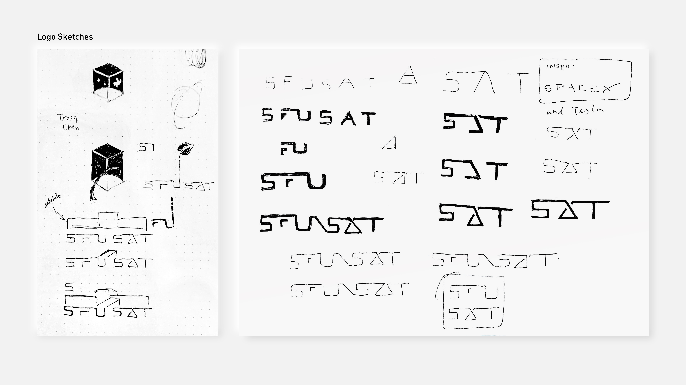
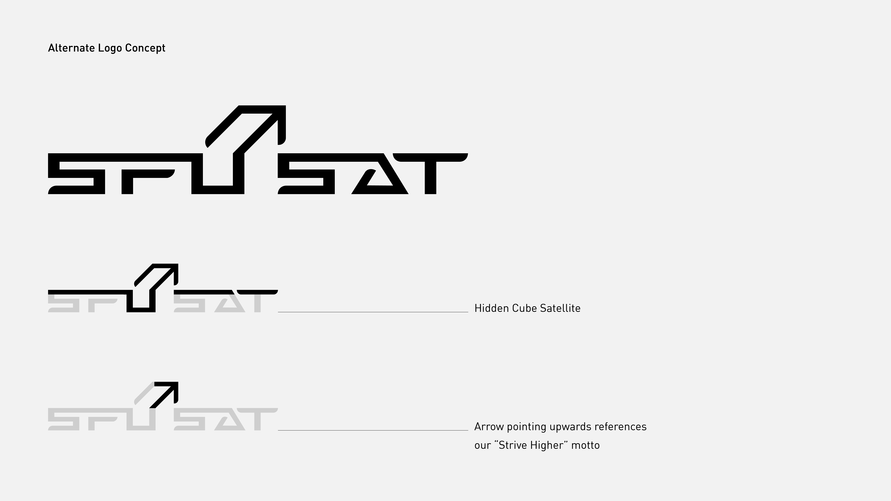
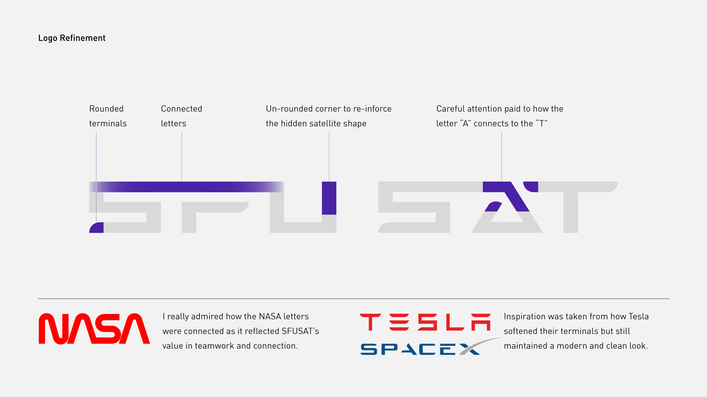
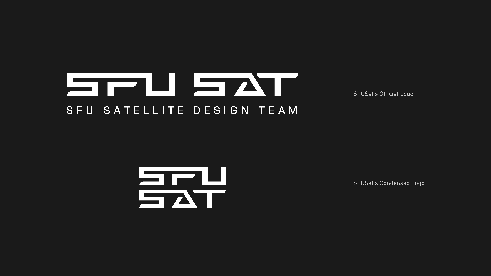
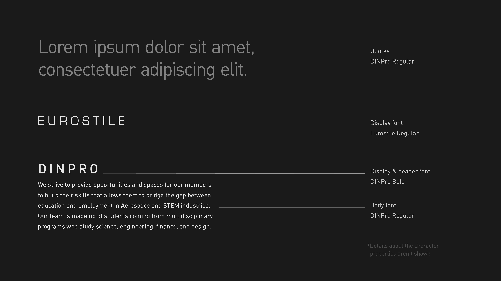
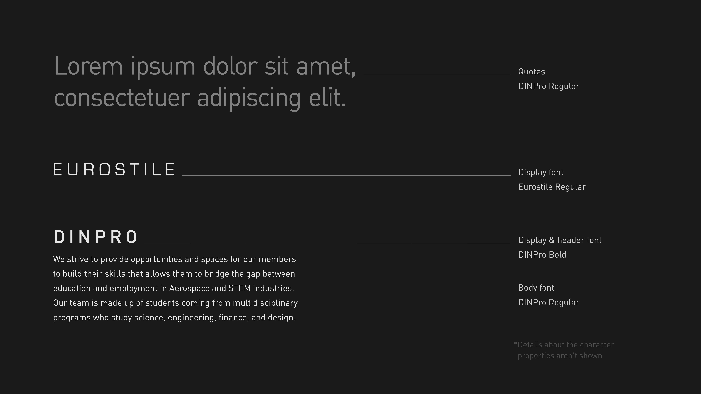

Being responsible for their overall image and branding, I was in charge of creating visually appealing work to advertise SFUSat presence.




Below is a part of the branding manual.
Before beginning on the branding manual, I held a quick meeting and got the members to write down their values, how they feel about their team, and how they want their team to be portrayed.


 
